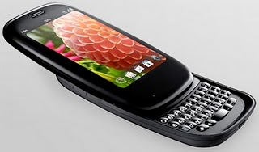

Goodbye iPhone, Hello Palm Pre Plus
First, I want you to know that I am not an Apple hater. I've owned several Apple products over the years (since the Mac OS X era started), and I think they are great products (to be honest). Therefore, this is not an Apple hate-fest! My goal is not to make someone like or dislike one product or brand over another. My goal is simply to try to put in words why I've decided to try something else other the iPhone.
Second, I am an open source advocate, I work for an open source company, I write open source articles to open source publications. I believe in open source, not as some sort of religious belief or moral imperative but rather as an alternative, and I am a sucker for 'alternatives'.
An alternative way to do business, an alternative way to write code, an alternative way to learn, an alternative way to teach. I believe in open source.
With that said, this month I am going to share with you a little bit about my story of moving away from Apple's iPhone and starting to use a Linux based phone like the Palm Pre Plus.

The actual story:
I bought an iPhone 3G back in December 2008, mostly because my job wanted me to be on call for emergencies and they were going to take care of most of the bill. I don't talk on the phone that much and at the time I owned a Mac laptop, so I was very familiar with the eye candy Apple has excelled in presenting to their users. What I wasn't very used to was the idea of having Internet access anywhere I went.
I quickly became even more addicted than normal to the Internet. Waiting in lines or at the doctor's office was not an issue anymore because I could check my email, use Twitter or Facebook, and even get work done all through my phone. I am not going to debate with anyone if this constant access to the Internet is a good thing or not. I happen to believe that like most things in life it has its advantages and disadvantages.
Twelve months went by, and my iPhone became the one item in my life that I had within my reach virtually 24/7.
In December 2009, I decided to upgrade, this time using my own funds. I got the iPhone 3Gs, and was very pleased with the upgrades in memory, bump in storage and camera quality that Apple provided with the product.
So, what changed for me to want to change phones?
Well, it hasn't been one specific problem, but a collection of events. I started hearing Steve Jobs trash Adobe, and letting everyone know how 'open' Apple is. Really? Open?
I could probably write pages upon pages about the issues I have with Apple's 'open' practices: not allowing users to directly manipulate their music files on the iPhone/iPod, or banning other languages/IDEs from writing apps to the iPhone/iPod (I think I heard that was overturned, maybe not), selling music with DRM and then charging extra to free the music, putting out 'HTML5' sample pages that only work with their own browser, a phone that only works on 1 US provider, and God forbid if you try to 'hack' your way into getting the phone working the way you'd like, they will release updates just to break your 'hack'. That just doesn't sound that open to me.
[ Late-breaking news from this article's author: as of last week, it is legal to jailbreak your iPhone. Despite this, however, I agree with his original premise and believe that it still stands without any modification: Apple's practices cannot be accurately described as "open". -- Ben Okopnik ]
Then came the news that Apple's market value passed Microsoft's - which, honestly, doesn't make much sense to me. Microsoft is everywhere, not just everywhere here in the U.S., they are literally everywhere around the world with Windows (desktops and servers), Office, MS SQL, XBox, Visual Studio, Sharepoint - they even provide the ECUs for Formula 1! In comparison, where is Apple? Mostly concentrated in the US, in a few desktops and notebooks, quite a lot of phones and MP3 players, but does that make Apple worth more than Microsoft? I am not an economist, and I am sure there is an explanation to all of this, but when I look around with my 'binary' perspective of either 'on' or 'off', I don't get it. It's hard to believe that a company that was mostly bankrupt in 1998 has surpassed Microsoft.
Then in June of 2010, tech media outlets around the world were speculating about what Apple would release at the WWDC besides the iPhone 4, which a lot of us found out about from the drunk guy that left one in a bar 3 months or so ago. Well, the WWDC came, and Steve Jobs showed to the world why Apple has bypassed Microsoft: presentation.
Steve Jobs presented 2 full hours on the iPhone 4 (and iOS4) without introducing anything else new. The iPhone 4 is cool, don't get me wrong, and to be honest, there are other phones out there that are just as good or better than the iPhone 4 hardware-wise, but when you add the usability of iOS and the iPhone it becomes quite the compelling combination to the masses.
On June 15th, the day pre-orders opened for the iPhone 4, I was up at 6 AM, and pretty much tried all day to pre-order 2 iPhones, one for me and one for my wife, without much success.
What bothered me the most was that Apple made 'reserving' an iPhone a mostly pain free process, but I wanted to pre-order one so it would be delivered at my doorstep. I did not want to go stand in line to pick it up at the store. For over 12 hours, Apple left 2 buttons on their web site: Pre-Order and Reserve. The 'Reserve' seemed to work, but the 'Pre-Order' didn't.
That's when I made my decision... How arrogant can a brand/company be to knowingly put out a 'broken' button (and yes, I understand it was due to heavy volume) on their page without any warning, notice, or press release to their customers? Has Apple become just a big technological drug dealer selling 'goods' to millions of junkies?
Well, I don't want to be part of that dance any longer.
The other alternative was to just pay a termination fee and jump to Verizon or Sprint to get an Android phone like the HTC Evo or Motorola Droid X, but that would again fall outside of my budget because my wife would stay under AT&T with her new iPhone, and I wouldn't be able to use a family plan for our phones. That's when I discovered that AT&T was now carrying the Palm Pre Plus, which runs the Linux based webOS. I decided to buy the phone even though there was an existing risk of buying a device from a company that has been recently acquired by HP. What would happen to support? What would happen to future WebOS releases?
Since that time, HP announced that it intends to use WebOS in future versions of its devices like smartphones and tablet PCs.
As of the writing of this article, I've owned my Palm Pre Plus for about 17 days, and overall I am a bit disappointed with the hardware, but very satisfied with WebOS. The multitasking capabilities are fantastic, although it clearly affects the battery life on the device, which compared to the iPhone is very poor. I like the fact that I can mount my device on my Fedora Linux laptop, drop MP3s files into the Music directory, and it just plays. The package management tool Preware is another great advantage of this phone, which lets you install unofficial apps, including WebOS patches, and even overclock your phone; not advised by Palm, yet it works pretty well so far.
In closing, I think WebOS has a lot of potential and I can't wait to see what HP is going to do with it. The phone itself has been a bit of a disappointment, but not enough for me to regret getting one, but I sincerely hope the new versions put out by HP/Palm will resolve some of the issues I've found so far.
| Share |

|
Talkback: Discuss this article with The Answer Gang
![[BIO]](../gx/authors/silva.jpg)
Anderson Silva works as an IT Release Engineer at Red Hat, Inc. He holds a BS in Computer Science from Liberty University, a MS in Information Systems from the University of Maine. He is a Red Hat Certified Architect and has authored several Linux based articles for publications like: Linux Gazette, Revista do Linux, and Red Hat Magazine. Anderson has been married to his High School sweetheart, Joanna (who helps him edit his articles before submission), for 11 years, and has 3 kids. When he is not working or writing, he enjoys photography, spending time with his family, road cycling, watching Formula 1 and Indycar races, and taking his boys karting,